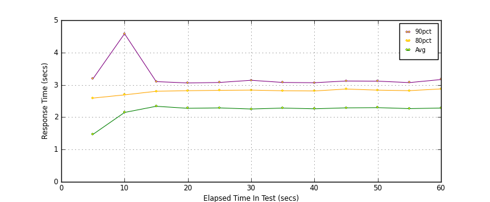
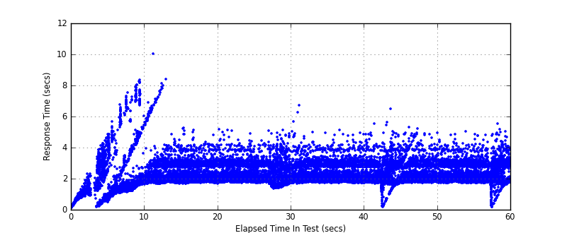
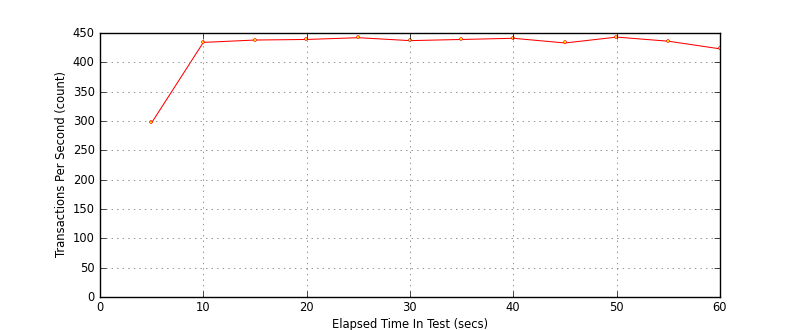

Performance Results Report
Summary
transactions: 26538
errors: 0
run time: 60 secs
rampup: 0 secs
test start: 2017-05-24 18:51:32
test finish: 2017-05-24 18:52:32
time-series interval: 5 secs
workload configuration:
| group name | threads | script name |
|---|
| user_group-21 | 40 | redis_stress.py |
| user_group-20 | 40 | redis_stress.py |
| user_group-23 | 40 | redis_stress.py |
| user_group-22 | 40 | redis_stress.py |
| user_group-25 | 40 | redis_stress.py |
| user_group-24 | 40 | redis_stress.py |
| user_group-2 | 40 | redis_stress.py |
| user_group-3 | 40 | redis_stress.py |
| user_group-1 | 40 | redis_stress.py |
| user_group-6 | 40 | redis_stress.py |
| user_group-7 | 40 | redis_stress.py |
| user_group-4 | 40 | redis_stress.py |
| user_group-5 | 40 | redis_stress.py |
| user_group-8 | 40 | redis_stress.py |
| user_group-9 | 40 | redis_stress.py |
| user_group-10 | 40 | redis_stress.py |
| user_group-11 | 40 | redis_stress.py |
| user_group-12 | 40 | redis_stress.py |
| user_group-13 | 40 | redis_stress.py |
| user_group-14 | 40 | redis_stress.py |
| user_group-15 | 40 | redis_stress.py |
| user_group-16 | 40 | redis_stress.py |
| user_group-17 | 40 | redis_stress.py |
| user_group-18 | 40 | redis_stress.py |
| user_group-19 | 40 | redis_stress.py |
All Transactions
Transaction Response Summary (secs)
| count | min | avg | 80pct | 90pct | 95pct | max | stdev |
|---|
| 26538 | 0.114 | 2.223 | 2.827 | 3.120 | 3.749 | 10.025 | 0.825 |
Interval Details (secs)
| interval | count | rate | min | avg | 80pct | 90pct | 95pct | max | stdev |
|---|
| 1 | 1488 | 297.60 | 0.114 | 1.466 | 2.590 | 3.185 | 3.550 | 4.863 | 1.072 |
| 2 | 2171 | 434.20 | 0.592 | 2.145 | 2.689 | 4.582 | 6.047 | 8.343 | 1.563 |
| 3 | 2192 | 438.40 | 1.641 | 2.336 | 2.801 | 3.100 | 3.825 | 10.025 | 0.924 |
| 4 | 2199 | 439.80 | 1.676 | 2.274 | 2.819 | 3.059 | 3.379 | 5.233 | 0.579 |
| 5 | 2212 | 442.40 | 1.721 | 2.286 | 2.830 | 3.074 | 3.294 | 5.174 | 0.563 |
| 6 | 2188 | 437.60 | 1.360 | 2.252 | 2.838 | 3.141 | 3.770 | 5.125 | 0.675 |
| 7 | 2196 | 439.20 | 1.682 | 2.281 | 2.817 | 3.074 | 3.347 | 6.697 | 0.586 |
| 8 | 2207 | 441.40 | 1.704 | 2.259 | 2.811 | 3.066 | 3.318 | 5.107 | 0.571 |
| 9 | 2166 | 433.20 | 0.160 | 2.288 | 2.870 | 3.119 | 3.596 | 6.472 | 0.708 |
| 10 | 2219 | 443.80 | 1.682 | 2.295 | 2.836 | 3.114 | 3.544 | 5.308 | 0.617 |
| 11 | 2184 | 436.80 | 1.709 | 2.264 | 2.820 | 3.069 | 3.235 | 5.029 | 0.555 |
| 12 | 2116 | 423.20 | 0.150 | 2.282 | 2.873 | 3.164 | 3.613 | 5.512 | 0.702 |
Graphs
Response Time: 5 sec time-series

Response Time: raw data (all points)

Throughput: 5 sec time-series
